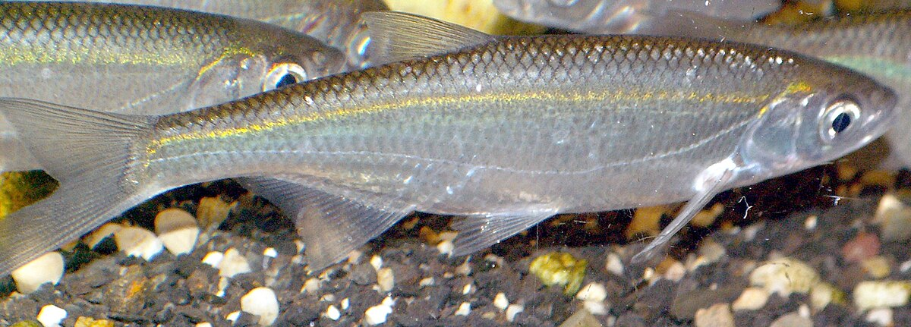

Fiches Amorces par Poisson

🎯 Gardon
- Chapelure blonde fine : 800g
- PV1 : 300g
- Chènevis moulu grillé : 300g
- Coriandre moulue : 50g
- Farine de biscuit : 400g
- Coco belge : 200g
- Terre de Somme : 400g

🎯 Brème
- Farine de biscuit : 300g
- PV1 Collant : 200g
- Terre de rivière : 300g
- Sucre vanillé : 2 sachets

🎯 Carpe
- Pellets moulus : 500g
- Farine de poisson : 300g
- Maïs broyé : 200g
- Amorce carpe riche : 500g

🎯 Tanche
- Terre de rivière : 400g
- Fouillis : 100g
- Amorce ail ou scopex : 300g
- Maïs doux : 100g

🎯 Ablette
- Chapelure blonde claire : 500g
- Farine de maïs : 200g
- Très peu d’additifs (légèreté)
- Amorce nuageante : 200g